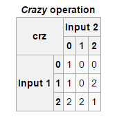
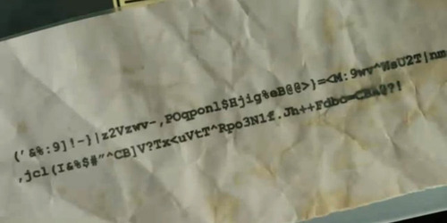

Ben Olmstead is best known as the creator of Malbolge (1998), an early esolang which remains the most difficult language to code. He’s also about as OG as one can get in the esolang world, part of the first group of programmers to take up the form in the late 90s.
>> Do you remember how you first heard about esolangs?
It would have been late ‘96 or early '97. I had internet access via college, and, well, I spent a lot of time plugging terms into search engines, then reading all the results. As someone with interest in computer programming, it was inevitable that I would stumble on esolangs.
>> How did you connect with the esolang community? What was it like at the time?
At the time, the “esolang community” was just a few people on Chris Pressey’s mailing list. It was very much like a mailing list with half a dozen young men who were interested in pushing the boundaries of programming… but not in useful directions. :-)
I think I was attracted to it for the challenges – I enjoyed implementing a Befunge interpreter and compiler, I enjoyed trying to golf Befunge programs, and I enjoyed wrapping my head around the stranger languages that popped up.
>> What does it mean to “golf Befunge programs”?
“Golf” is a programming challenge in which you try to make the shortest program (in terms of number of characters) to do some specified task. Perl golf is especially popular these days.
>> Your first esolang, Wierd, was a collaboration with Pressey and John Colagioia. How did that come about? Did it start with ideas presented in the mailing list itself? [NOTE: the Wierd name comes from Wired + weird, more on the language here]
I shouldn’t have credit for Wierd. I’m sure we were talking about ideas on this list, but from what I remember Chris actually made the Wierd spec and interpreter on his own. Piet and Whitespace would have shown up soon after – sort of mining the “alternate ways to represent programs” vein.
>> Tell me about the choice to use ternary numbers in Malbolge. Is that connected with the idea of ternary logic (such as with the Soviet ternary computers)?
I made Malbolge (from conception to implementation) in one afternoon, which should tell you something about the depth of the design process. I picked ternary because it seemed harder to understand than binary.

>> I like that base three is both a low number, yet one so complicated to think in. Tell me about the crazy operation: was this also designed specifically to be as counter-intuitive as possible? You maintain three 0 outputs, three 1s, three 2s, was that technically necessary?
Yes, it was designed to be counter-intuitive.
The 3-3-3 split is not necessary; I don’t know why I did it that way. (The binary analogy would be NAND: you can build up any logic from NAND, which has three 1s and one 0 in its truth table.)
>> There are a few bugs in the compiler (such as stopping execution when hitting data outside of the 33-126 range). Have these become part of the language itself? What is the usual practice when people discover unintentional compiler features like these? Have they made Malbolge easier or harder to use?
Stopping execution outside of 33-126 was intended, I think; if anything, there is a bug in the specification.
I know there is a mismatch between the documented and implemented tables. I have noticed that some people decide that the bug is in the specification, and others decide the bug is in the implementation; it certainly makes Malbolge harder to use, and fragments the user community (such as it is).
If I were to make a Malbolge 2000, I would definitely make the documentation subtly wrong.
>> Part of what’s unique about Malbolge is how it alters its own source code as it runs (in memory at least) and uses the same content as both data and instructions. Do you remember the thinking behind these features?
I probably never thought about using the same memory space for both code and data; at the time my understanding of computation was heavily informed by how real hardware (especially x86) works.
Self-altering instructions were specifically intended to make things difficult.
>> When you first designed Malbolge, did you know whether it was possible to write working programs in it?
I thought it was, but I never had good evidence for it.
>> Tell me about Dis; was it a chance to make a Malbolge that one can actually code by hand, or was there a different idea at work?
It was a reduced version of Malbolge in which I was able to write an actual program – I never wrote a Malbolge program. (Well, I think I wrote a program that printed “H” and exited.) It seemed odd to release a language without even a “Hello, world”, so I put out a “tractable” version at the same time.
>> Did the Essies ever actually happen? It looks like nearly every year the winners weren’t picked or there’s no record of whether there were submissions or winners (much in the spirit of esolangs). What was that experience like?
They did happen the first time around. The experience was forgettable: I literally forgot that they ever happened until I started reading about them on the esolang wiki.
>> Are there any stand-out esolangs for you (recent or otherwise)? Do you still follow what’s happening in esoteric programming?
Befunge-93 is probably my favorite to actually use; writing Befunge programs is almost like drawing, or playing a game. I think part of the appeal is that Chris made an instruction set that was nicely balanced for making things easy, but not too easy, and the way the instruction pointer moves adds a sort of physicality to the language – you can almost imagine a Befunge program as a sort of Rube Goldberg roller coaster.
I really haven’t tracked esolangs in this millennium, though. It would be a little bit sad if there were no great ones.
>> What is xn13.c?
It is a program, and a puzzle. A whimsy intended to momentarily amuse those who would be inclined to be amused by it.
It is also, unfortunately, a use of undefined behavior that is increasingly unlikely to work with optimizations turned on. I should probably update it.
>> What were the early attempts to write Malbolge code like?
The history is available on the web, but essentially a few people used genetic algorithms to generate some “hello, world” programs of varying quality, and then Lou Scheffer had the insight to treat it as a cryptanalysis problem, which allowed him to write real programs.

Malbolge on CBS's Elementary
>> How did you first hear about Malbolge’s mention on Elementary? What was their take on it? I haven’t actually seen the episode, but I hear the bad guy writes a Malbolge program by hand and leaves it as a clue…
I have seen the episode (a friend dropped me a note when it aired). Your characterization is roughly right; essentially Holmes finds a scrap of paper (dropped by the villians) with a Malbolge program on it, which, when “decoded”, provides the clue the heroes need to move the plot forward.
It was slightly surreal, to find some analogue of me that had been dragged into a fictional universe. (The “creator of Malbolge” is referenced, though not named.)
I got this response (via Twitter) from the staff: “Malbolge made it into the show after a long and alarming rant from our writer Jeff King. Glad it amused.” Not sure if they had any idea who I was :-)
>> It seems that many esolangers favor command-line interfaces (or any interface that’s close to the machine), and forego commercial sites like Facebook and Tumblr, favoring IRC, Wikipedia, and other explicitly non-commercial forms of communication. Is this your experience? Is this just a geek thing or does this tie into something more specific to esolangers?
I don’t know about “geek” thing, but CLIs are a “programmer” thing. That’s a chicken-and-egg thing, to some extent: programmers prefer CLIs because that’s where programming tools are, and programming tools have CLIs because that’s what programmers prefer. CLIs aren’t really “closer to the machine” in any meaningful sense, though.
As far as the rest of it goes, I have no idea. I dropped out of esolangs before Facebook or Tumblr existed (or even Friendster or Myspace). I personally have no love for Facebook (because I am anti-“social”), but I also don’t use IRC (because I am antisocial).